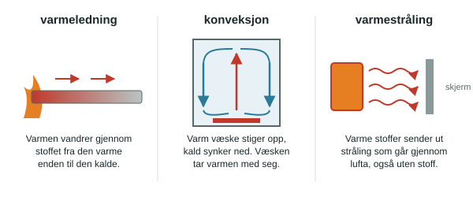
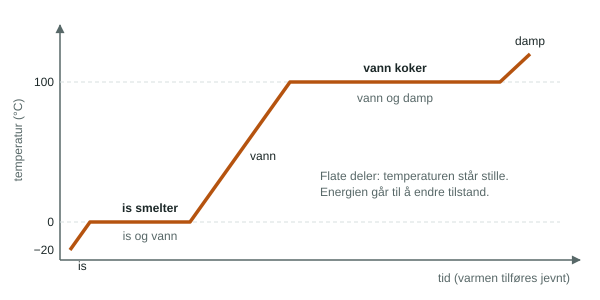

Temperatur og varme
I dagligtale bruker vi «temperatur» og «varme» om hverandre. I fysikken betyr de to forskjellige ting. Her lærer du forskjellen, hvordan varme flytter seg, og hva som skjer når et stoff smelter eller koker. Det trenger du for å forstå varmevekslere, ovner og kjølesystemer.
Temperatur
Alle stoffer består av små partikler som hele tiden er i bevegelse. I et fast stoff dirrer de på plass. I en væske og en gass beveger de seg fritt omkring. Dette lærte du om i Stoffer og formler.
Temperatur er et mål på hvor fort partiklene beveger seg i gjennomsnitt. Jo varmere stoffet er, desto fortere beveger partiklene seg.
Vi måler temperatur i grader celsius (°C) eller kelvin (K). Celsius-skalaen har 0 °C der vann fryser og 100 °C der vann koker ved normalt lufttrykk. Kelvin-skalaen starter på det absolutte nullpunktet, −273 °C. Der står partiklene så stille som det er mulig. Kaldere enn dette kan det ikke bli.
- Fra °C til K: legg til 273. 20 °C = 293 K.
- En temperaturendring er like stor i °C og K. Blir vannet 15 °C varmere, er det også 15 K varmere.
Mer om omregning står på siden Størrelser og enheter.
På laben måler du temperatur med termometer. I anlegget sitter det faste temperaturgivere i rør og tanker. De lærer du om i temaet Automasjon.
Varme
Varme er energi som går fra et sted med høy temperatur til et sted med lavere temperatur. Varme har symbolet Q og måles i joule, som all annen energi. Se Energi, arbeid og effekt.
Varme går alltid av seg selv fra varmt til kaldt, aldri motsatt. Det fortsetter til begge har fått samme temperatur. Da sier vi at de er i termisk likevekt. En kopp kaffe blir kald fordi den gir varme til lufta i rommet.
Et fullt badekar med vann på 40 °C har lavere temperatur enn en kopp kaffe på 80 °C. Likevel kan badekaret gi fra seg mye mer varme, fordi det er så mye mer vann i det.
Gnistene fra en vinkelsliper kan være over 1000 °C. De gjør likevel lite skade på huden, fordi hver gnist er så liten at den har svært lite energi.
Temperaturen sier hvor varmt noe er. Varmen sier hvor mye energi som flytter seg.
Tre måter varme flytter seg på

Varmeledning
Holder du en metallstang i en flamme, blir snart den andre enden varm. Partiklene i den varme enden dytter borti naboene sine, som igjen dytter borti sine naboer. Slik vandrer varmen gjennom stoffet. Dette kalles varmeledning.
Metaller leder varme godt. Derfor lages varmevekslere av stål, kobber eller titan. Luft, mineralull og skumplast leder varme dårlig. Slike stoffer brukes som isolasjon rundt varme rør og tanker for å holde på varmen.
Konveksjon
I væsker og gasser kan stoffet selv flytte på seg og ta varmen med. Dette kalles konveksjon. Varm væske har lavere tetthet enn kald væske, se Masse, volum og tetthet. Derfor stiger varm væske opp, mens kald væske synker ned. Slik blir hele tanken varm, selv om varmeelementet bare sitter i bunnen.
I et anlegg hjelper vi ofte til med en pumpe, en vifte eller en omrører. Da går varmen mye raskere. Det kalles tvungen konveksjon.
Varmestråling
Alle varme gjenstander sender ut varmestråling. Den går gjennom lufta og trenger ikke noe stoff å gå gjennom. Det er slik varmen fra sola kommer til jorda gjennom tomt rom. Står du foran tappehullet på en smelteovn, kjenner du strålingen fra metallet på flere meters avstand, selv om lufta mellom dere ikke er så varm.
Jo varmere noe er, desto mer stråler det. Blanke flater stråler lite og reflekterer mye. Derfor brukes blanke skjermer og aluminiserte vernedrakter ved smelteovner.
Faseoverganger: når stoffet skifter tilstand
Et stoff kan være fast, flytende eller gass. Når det går fra én tilstand til en annen, kalles det en faseovergang.
| Faseovergang | Fra → til | Energi | Eksempel |
|---|---|---|---|
| smelting | fast → væske | tar opp energi | skrapjern smelter i ovnen |
| størkning | væske → fast | gir fra seg energi | metallet størkner i støpeformen |
| fordamping | væske → gass | tar opp energi | vann koker i en dampkjel |
| kondensering | gass → væske | gir fra seg energi | damp blir til vann i en varmeveksler |
Temperaturen der et stoff smelter, kalles smeltepunktet. Temperaturen der det koker, kalles kokepunktet.

Legg merke til de flate delene i figuren. Mens is smelter, holder blandingen av is og vann seg på 0 °C, selv om du varmer hele tiden. Energien går med til å bryte opp den faste strukturen, ikke til å øke temperaturen. Det samme skjer ved koking: vannet holder seg på 100 °C til alt har blitt damp.
Hvor mye energi som trengs, regner du ut på siden Varme og energi i prosesser.
Kokepunktet avhenger av trykket
Vann koker ved 100 °C bare når trykket er ca. 1 bar. Ved høyere trykk koker vannet ved en høyere temperatur. Ved lavere trykk koker det ved en lavere temperatur.
- Ved 2 bar absolutt trykk koker vann ved ca. 120 °C. Derfor kan damp under trykk være mye varmere enn 100 °C.
- Ved 0,2 bar absolutt trykk koker vann ved ca. 60 °C. I en vakuuminndamper kan man derfor koke bort vann uten å varme produktet så mye.
Hva absolutt trykk er, står på siden Kraft og trykk.
Oppgave: Kjølevannet går inn i en varmeveksler med 12 °C og kommer ut med 27 °C. Hvor stor er temperaturøkningen i °C og i K? Hva er utløpstemperaturen i K?
Løsning:
- Temperaturøkningen: \( \Delta T = 27 \text{ °C} - 12 \text{ °C} = 15 \text{ °C} \). Det er det samme som 15 K.
- Utløpstemperaturen i kelvin: \( 27 + 273 = 300 \text{ K} \)
Svar: Vannet blir 15 °C (15 K) varmere, og det kommer ut med 300 K. Vannet har tatt opp varme fra den varme siden av varmeveksleren.
- Damp gir verre brannskader enn kokende vann. Når dampen kondenserer på huden, gir den fra seg mye ekstra energi. Damp fra en lekkasje kan også være usynlig nær lekkasjen.
- Varme rør og tanker kan se helt vanlige ut. Kjenn aldri etter med hånda. Sjekk temperaturen og bruk hansker.
- Varmestråling fra flytende metall kan gi brannskader på avstand. Bruk varmebeskyttende verneutstyr og ansiktsskjerm, og hold avstand.
Test deg selv
Hva er varme?
- Hvor varmt noe er.
- Energi som går fra noe varmt til noe kaldere.
- Hvor fort partiklene beveger seg.
Varme er energi som flytter seg på grunn av en temperaturforskjell. Hvor varmt noe er, og hvor fort partiklene beveger seg, er temperatur.
Varmt vann stiger opp i en tank, og kaldt vann synker ned. Hva kalles dette?
- varmeledning
- konveksjon
- varmestråling
Ved konveksjon flytter væsken seg og tar varmen med. Varmt vann har lavere tetthet og stiger opp.
Hvordan kommer varmen fra sola til jorda?
- varmeledning
- konveksjon
- varmestråling
Mellom sola og jorda er det nesten tomt rom. Bare varmestråling kan gå uten noe stoff.
Du varmer vann som koker ved 100 °C. Hva skjer med temperaturen mens vannet koker?
- Den stiger jevnt.
- Den står stille på 100 °C.
- Den synker.
Under en faseovergang går energien til å endre tilstanden, ikke til å øke temperaturen. Temperaturen står stille til alt vannet har blitt damp.
Olje varmes fra 20 °C til 65 °C. Hvor stor er temperaturøkningen i kelvin?
- 45 K
- 318 K
- 338 K
En temperaturendring er like stor i °C og K: 65 − 20 = 45 °C = 45 K. 338 K er sluttemperaturen, ikke økningen.
Ordliste
| Begrep | Forklaring | Engelsk |
|---|---|---|
| temperatur | Et mål på hvor varmt noe er, altså hvor fort partiklene i stoffet beveger seg i gjennomsnitt. Måles i °C eller K. | |
| absolutt nullpunkt | Den lavest mulige temperaturen, 0 K eller −273 °C. Der står partiklene så stille som mulig. | |
| varme | Energi som går fra et sted med høy temperatur til et sted med lavere temperatur. Måles i joule. | |
| termisk likevekt | Når to ting har fått samme temperatur, slik at det ikke lenger går varme mellom dem. | |
| varmeledning | Varme som vandrer gjennom et stoff fra partikkel til partikkel, for eksempel gjennom en metallvegg. | |
| konveksjon | Varme som føres med når en væske eller gass strømmer, for eksempel varmt vann som stiger opp i en tank. | |
| varmestråling | Varme som sendes ut fra varme gjenstander og kan gå gjennom luft og tomt rom, for eksempel fra flytende metall. | |
| isolasjon | Materiale som leder varme dårlig. Det legges rundt rør og tanker for å holde varmen inne eller ute. | insulation |
| faseovergang | Når et stoff går fra én tilstand til en annen, for eksempel fra væske til gass. Temperaturen står stille så lenge det skjer. | |
| kokepunkt | Temperaturen der en væske koker og blir til gass. Kokepunktet blir høyere når trykket øker. | boiling point |
| smeltepunkt | Temperaturen der et fast stoff smelter og blir til væske. | melting point |
Les mer
- Varme og energi i prosesser viser hvordan du regner ut varmen med \( Q = m \cdot c \cdot \Delta T \).
- Energi i reaksjoner i Kjemiske prinsipper forklarer hvorfor fordamping tar opp energi og kondensering gir fra seg energi.
Om kildene: Teksten, eksemplene og figurene på denne siden er laget for dette nettstedet. Siden bygger på undervisningsopplegg i kjemiprosess- og laboratoriefag ved Sauda vgs, som er utarbeidet med utgangspunkt i blant annet Kjemien stemmer, Laboranten og åpne nettkilder.